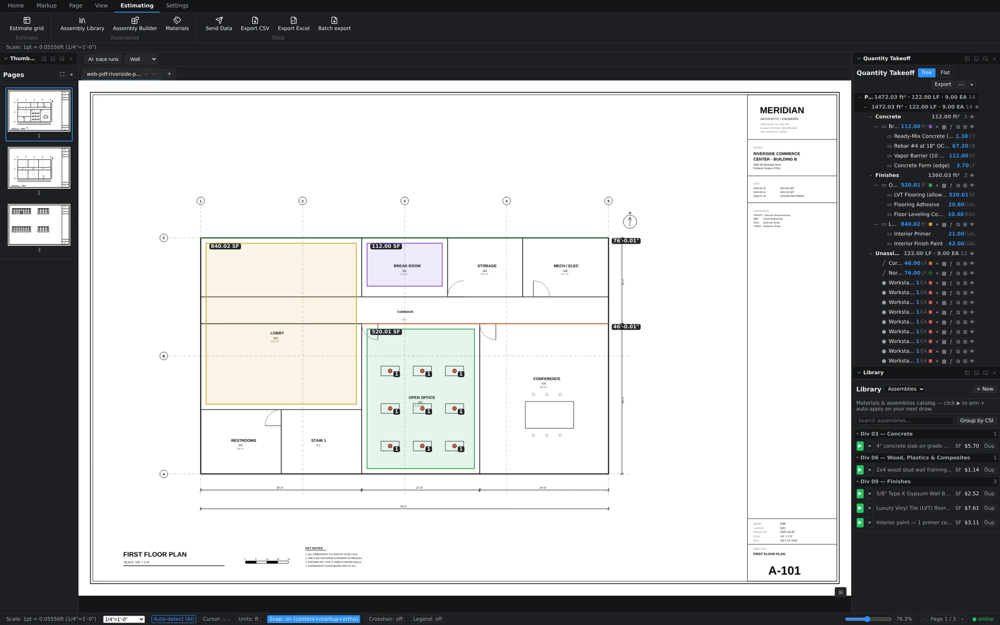
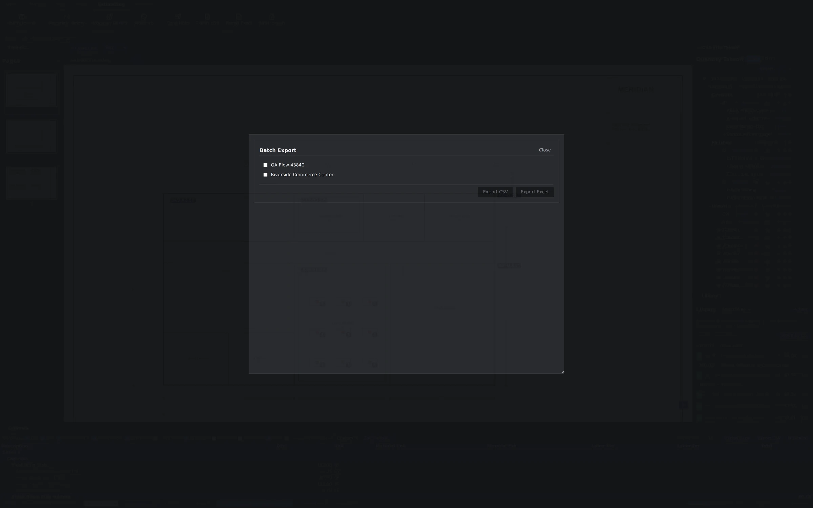

Open the grid
Switch to the Estimating ribbon tab and click Estimate grid. The grid docks along the bottom of the workspace with the plan still visible above it, so you can watch a row appear the moment a measurement commits. A Maximize button expands it when you're in pure review mode. The same ribbon holds the Assembly Library, Assembly Builder, and Materials — everything that feeds the numbers.

Read the hierarchy
The grid is organized the way an estimate is actually reviewed: Sheet → CSI division → assembly → material lines. Expand Sheet 1, then Concrete, then a Break Room Slab assembly, and you'll see the measured quantity (112.00 ft²) break out into its component rows — Ready-Mix at 1.38 CY, rebar at 67.20 LB, vapor barrier at 112 SF, concrete form at 3.70 LF. Every line traces back to a shape on the sheet, and every change to a shape re-prices the lines instantly. No re-typing quantities into a spreadsheet, which is where most estimating errors are born.

Choose your columns
Not every review needs every number. The grid's column toggles let you show or hide Qty, Unit, Material Unit, Material Ext, Labor Hrs, Labor Rate, Labor Ext, Waste %, Markup %, and Total. A quantity check might only need Qty and Unit; a bid review wants the full extension chain. Toggle down to the layout that answers the question in front of you.
Set your markup
The Markup % field applies your margin on top of the extended material and labor costs — set it to 15 and the Total column reflects it across the estimate. Adjust it while you review and watch the totals move; the underlying quantities and unit costs stay untouched.
Export the estimate
When the numbers are right, get them out:
- Export Excel or Export CSV — available right on the grid and on the Estimating ribbon. Excel is the format most GCs and accounting workflows expect; CSV drops cleanly into any other system.
- Batch export — click Batch export on the ribbon to open a dialog with checkboxes for your projects. Tick what you need, choose CSV or Excel, and export several estimates in one pass instead of opening each project in turn.
